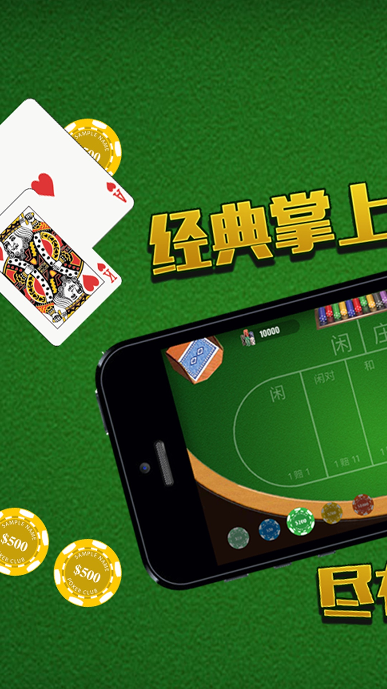
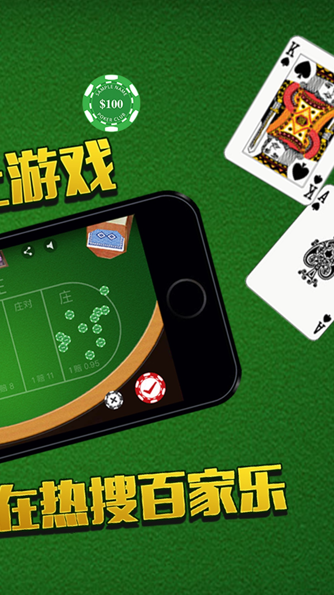

百家乐
百家乐（pokergame)-经典娱乐 是一款经典纸牌游戏
起源于法国的一种纸牌游戏，流行于欧洲各地赌场，20世纪从美国引入澳门，并为其起了一个具有东方色彩的名字--百家乐。
基本玩法：
使用3～8副，每副52张纸牌，洗在一起，置於发牌盒中，由荷官从其中分发。
各家力争手中有两三张牌总点数为9或接近9，K、Q、J和10都计为0，其他牌按牌面计点。
计算时，将各家手中的牌值相加，但仅论最後一位数字。当场付赌金最多者为庄家。
(特别声明：本应用为单机游戏，不涉及赌博。应用中的筹码与现实金钱无关！)


email: fpd573@163.com
@JiangMao